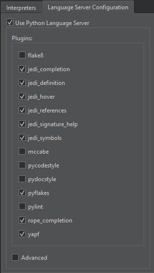
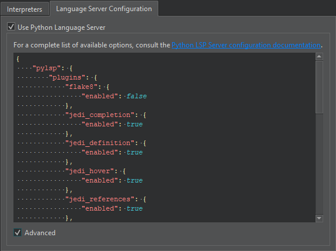

Configure Python language servers
To set preferences for Python language servers:
- Go to Preferences> Python > Language Server Configuration to select the Python language server plugins to use.

- Select Advanced to configure the plugins.

For a complete list of configuration options, see Python Language Server Configuration.
To disable the Python language server, clear Use Python Language Server.
See also How To: Manage Language Servers, Develop Qt for Python applications, and Language Servers.